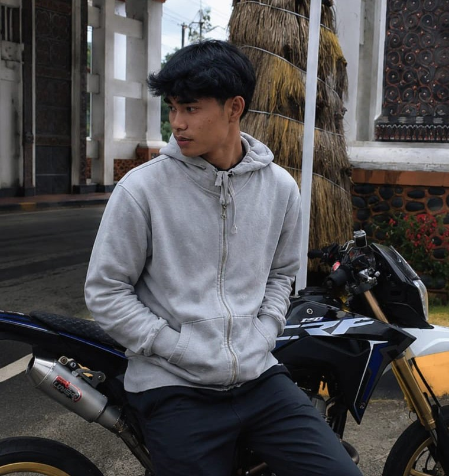

Good Company
Enjoying time with friends, sharing stories, and taking a break from everyday routines.
SELAMAT DATANG DI SEMESTAKU
Aku misbahuddin, mahasiswa Sistem Informasi, alumni pesantren, dan seorang pemimpi yang sedang membangun jalannya sendiri.
01 / THE PERSON BEHIND THE SCREEN

A PERSONAL INTRODUCTION
Aku Misbahuddin. Kamu bisa memanggilku Misbah atau Uddin.
Saat ini aku mahasiswa semester 7 Program Studi Sistem Informasi di Institut Hasan Sulur (IHS), Wonomulyo. Sebelum perjalanan kuliah, pesantren menjadi bagian penting dari pengalaman hidupku.
Aku masih belajar, bertumbuh, dan mencari jalan terbaik untuk masa depan. Website ini adalah ruang kecil untuk menyimpan cerita, prinsip, perjalanan, dan impian yang ingin kuwujudkan.
02 / BEYOND THE SCREEN
One of the things I enjoy is healing and spending time with friends. Sometimes, the simplest moments become the most meaningful parts of the journey.
Enjoying time with friends, sharing stories, and taking a break from everyday routines.
Taking life one step at a time and continuing to discover who I want to be.
03 / SELECTED PROJECTS
Setiap karya dimulai dari proses belajar. Ruang ini disiapkan
untuk proyek-proyek yang akan kubangun, kembangkan, dan bagikan ke depannya.Personal portfolio bertema luar angkasa dengan visual planet 3D, cerita personal, dan desain responsif untuk desktop maupun perangkat mobile.
Tech Stack: HTML · CSS · JavaScript · Three.js
04 / MY JOURNEY
Tidak semua perjalanan terlihat dari pencapaian besar. Ada proses, pelajaran, dan pengalaman yang perlahan membentuk siapa diriku hari ini.
A CHAPTER OF LEARNING
Bagian dari perjalanan pendidikan yang memberiku pengalaman dan pelajaran hidup.
COMPLETED CHAPTERA PERSONAL MILESTONE
Salah satu momen berharga dari perjalanan pesantren yang menjadi bagian dari ceritaku.
A MEMORY TO KEEPTHE CURRENT CHAPTER
Saat ini aku melanjutkan pendidikan di Institut Hasan Sulur (IHS), Wonomulyo, sebagai mahasiswa semester 7.
IN PROGRESSWHAT COMES NEXT
Masih banyak hal yang ingin kupelajari, pengalaman yang ingin kujumpai, dan impian yang ingin kuusahakan.
TO BE CONTINUED05 / VALUES I CHOOSE
A PERSONAL REMINDER
Di tengah banyaknya pilihan dalam hidup, aku ingin tetap punya prinsip yang menjadi pengingat ketika perasaan dan keputusan tidak selalu berjalan searah.
Suka boleh, pacaran jangan. Kita punya perasaan, Allah punya aturan. Meski sepi, pacaran bukan solusi.
06 / WHAT DRIVES ME
Aku ingin membahagiakan orang tuaku. Bukan hanya lewat pencapaian atau materi, tetapi juga dengan menjadi seseorang yang bisa mereka banggakan dan andalkan.
Aku juga ingin menjadi abang yang baik bagi adik-adikku, serta om yang bisa hadir dan memberi contoh baik bagi keponakan-keponakanku.
Bagiku, kesuksesan akan terasa lebih berarti ketika orang-orang yang kusayangi ikut merasakan kebaikannya.
07 / FIND ME IN THE UNIVERSE
One universe. Many ways to connect.
Welcome to my little corner of the internet. Follow my journey through the platforms where I share my world.